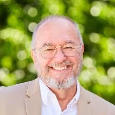
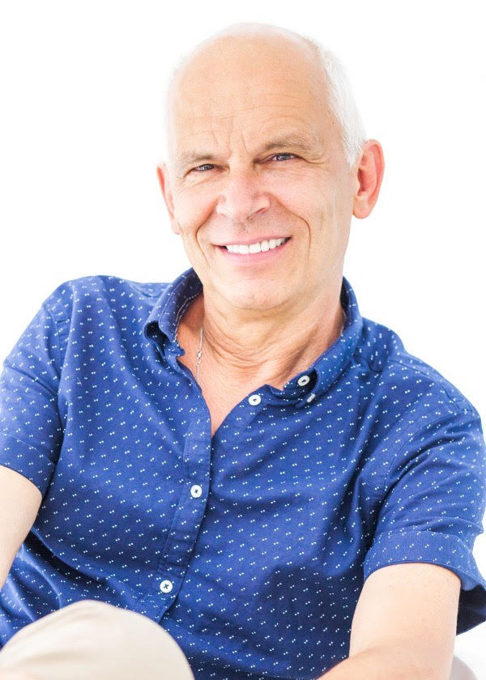
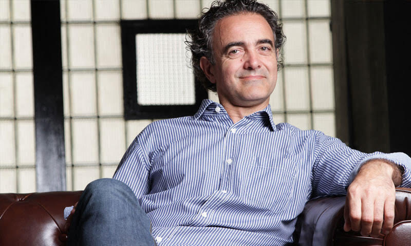

Angeles Wolder
https://institutoangeleswolder.com/investigacion-descodificacion-biologica/"
Angeles Wolder Helling nació en 1961 en Necochea, Argentina. Completó los estudios de Licenciatura en Kinesiología (Fisioterapia) en la Universidad de Buenos Aires (UBA) y de Profesora en Enseñanza Universitaria en la Universidad de Belgrano. Fue profesora de Anatomía en la UBA durante 10 años hasta que se trasladó a Cataluña, donde ha impartido formación en tres universidades. Se especializó en Ergonomía y Psicosociología e inició el contacto con el área de terapias complementarias con los estudios de Programación Neurolingüística (1995), Hipnosis Ericksoniana (1996), Constelaciones Familiares (2001), Nueva Medicina Germánica (2007) y Biodescodificación (2008). Su pasión por el estudio del ser humano la llevó a cursar en el año 2005 la Licenciatura de Antropología Social y Cultural en la Universitat Autònoma de Barcelona (UAB). En su andadura profesional ha organizado e impartido numerosos talleres de desarrollo personal usando las herramientas de la Descodificación Biológica, ha participado en diversos programas de radio y televisión y ha escrito artículos sobre Descodificación Biológica Original.
Eric Corbera

https://www.enriccorberainstitute.com/
Eric Corbera, icenciado en Psicología, es uno de los pensadores más reconocidos a nivel internacional en el ámbito del desarrollo personal. Creador del método de la Bioneuroemoción® y fundador del Enric Corbera Institute, se ha convertido en un referente en la gestión de las emociones, el desarrollo de la consciencia y el bienestar personal. En los últimos 10 años, ha formado con su equipo a más de 50.000 personas de todo el mundo, ofreciéndoles herramientas para que puedan entender y aplicar la gestión emocional en los problemas del día a día.
Christian Flèche

https://www.christianfleche.com/
Christian Flèche tiene formación paramédica, Enfermero, DE No proviene del mundo de la psicología, sino del de la biología: el funcionamiento del cuerpo humano, las enfermedades, son una metáfora de nuestras necesidades, nuestras emociones, nuestras experiencias de vida. De encuentro en encuentro: Marc Fréchet, obra del Sr. Erickson, algunos elementos tomados de Hamer, Christian Flèche ha desarrollado una forma de escuchar el síntoma: biológico, cíclico, transgeneracional. Él, con Philippe Lévy, creó nuevos protocolos, haciendo de Biological Decoding ™ un método de diagnóstico emocional original, así como una nueva forma de Terapia Breve. Christian Flèche es un Master Practitioner en PNL, Practitioner in Metáforas, autor de 17 libros, 2 CD de audio.
Ricardo Eiriz

https://www.metodointegra.com/ricardo-eiriz/biografia/